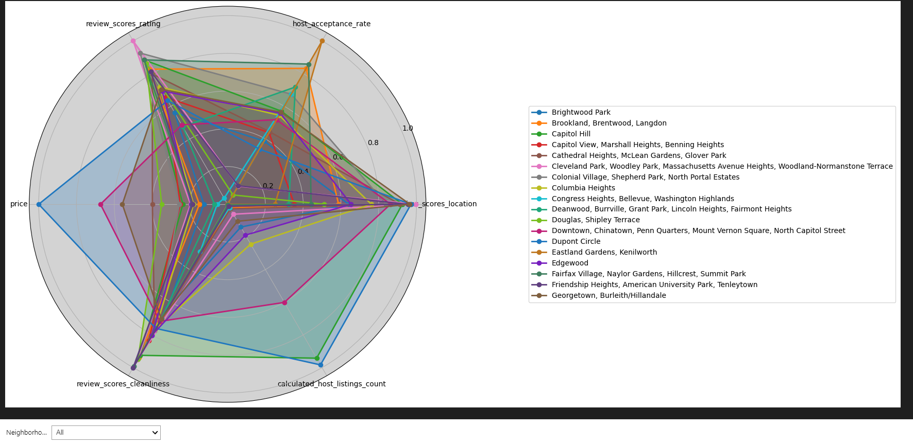
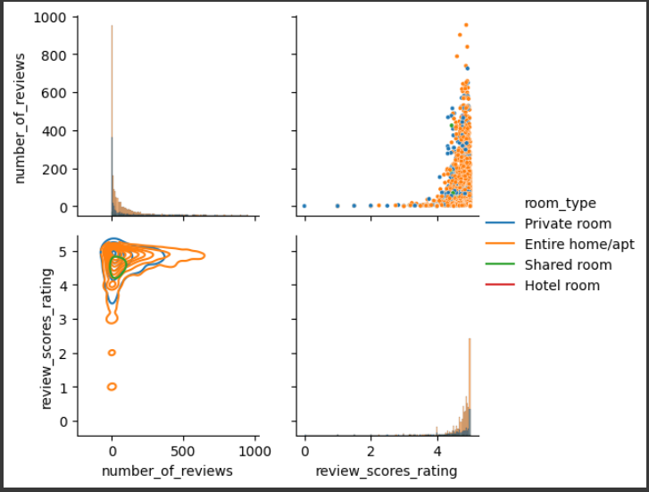
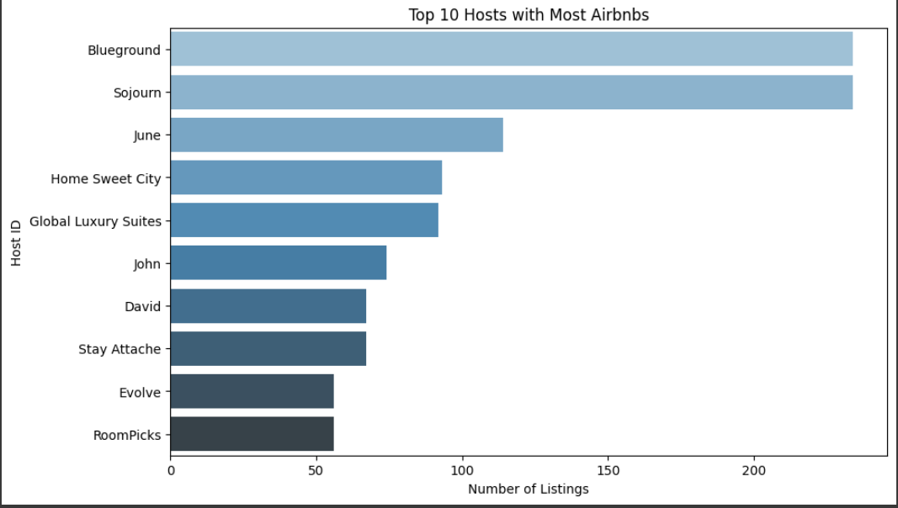

Radar Chart Visualizing Airbnb Listing Metrics Across Washington D.C. Neighborhoods

This radar chart offers a comprehensive visualization of key metrics for Airbnb listings distributed across various neighborhoods in Washington D.C. It tracks several metrics such as review scores (specifically rating, location, and cleanliness), the calculated number of listings per host, average price per night, and host acceptance rate. Each neighborhood is differentiated by a unique colored line, making it easy to compare these aspects side-by-side. This visualization helps in analyzing the performance and attractiveness of Airbnb listings in different parts of the city.
Distribution of Airbnb Review Scores and Listing Types

This image is divided into two main parts. The first chart shows a histogram that represents the distribution of the total number of reviews received by different types of Airbnb listings, including private rooms, entire homes/apartments, shared rooms, and hotel rooms. The second chart, a box plot, illustrates the distribution of review scores for each listing type, indicating median values, quartiles, and outliers. This comparison sheds light on guest preferences and satisfaction levels across various types of accommodations offered on Airbnb.
Top 10 Airbnb Hosts with the Most Listings in Washington D.C.

This bar chart provides a clear visualization of the top 10 Airbnb hosts in Washington D.C. with the most listings. It is designed to show the concentration of listings among these hosts, which may indicate trends of commercial-scale operations. The x-axis quantifies the number of listings, while the y-axis features host names or identifiers, marked with bars of varying lengths. This chart helps to identify major players in the local Airbnb market and can be used to study the impact of high-volume hosts on the rental landscape.